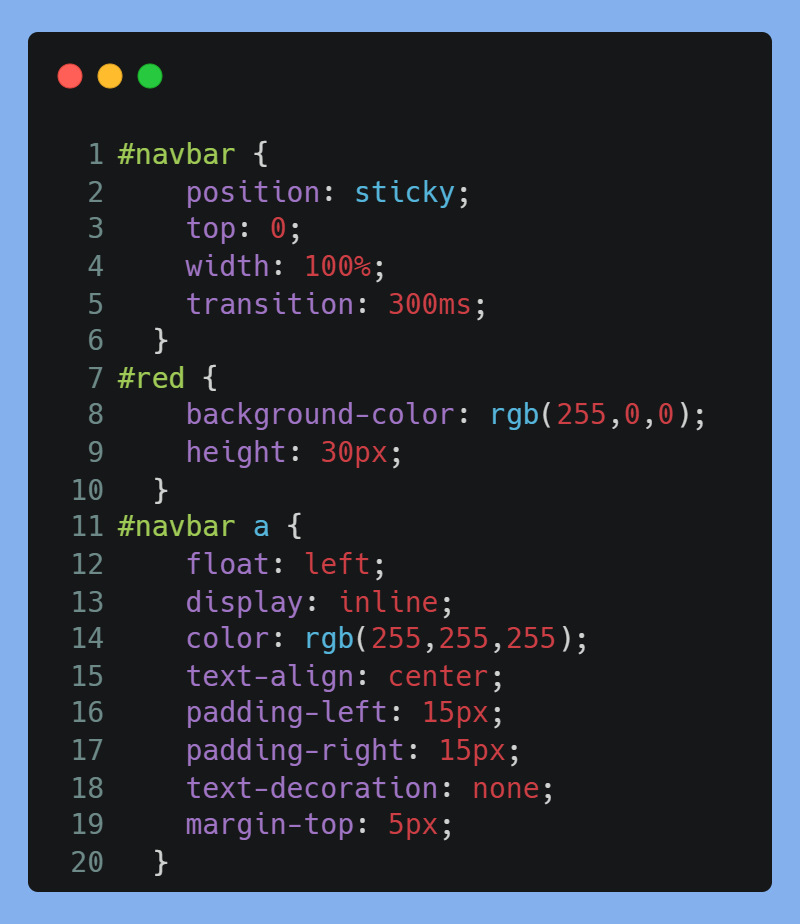

Webteknologier
Problem
Som rejsende GCP-elev kan det være svært at finde ud af hvordan man skal tilgå sin destination på. Der findes selvfølgelig mange hejmmesider som har tilbyder masser af information til rejsende, men det er de færreste der er målrettet til elever på GCP-tur.
Vores løsningsforslag
Vi som 3.g'ere har derfor udviklet en hjemmeside til de kommende elever, der skal til Singapore. Hjemmesiden er ment som et værktøj til at kunne finde rundt i Singapore og få det meste ud af turen. Den indeholder genrel information om landet, tips til sightseeing, et interaktivt kort med relevante steder markeret og personlige tips og rejseerfaringer, som vi lavede, samt nogle billeder fra vores tur. Hjemmesiden skal være nemt tilgængelig under opholdet i byen, og derfor er den lavet til at kunne vises på mobilen.
Farvedesign
Vi valgte at arbejde med nærbeslægtede farvetoner. Da vores destination var Singapore valgte vi passende rød og hvid (flagets farver) som grundfarverne. Menuen i toppen af hjemmesiden er netop ment som en henvisning til flaget. Hjemmesidens resterende farver baserer på rød og hvid. Det er altså forskelligt mørke toner af lyserød der er blevet brugt. Vi valgte ikke at arbejde med komplementærfarver, da disse ville have været for stor en kontrast, som vi ikke ønskede at opstille. Farverne skulle netop basere på destinationens farver.

Opbygning af hjemmeside
Vi valgte, at lave en hjemmeside med en homepage og flere undersider, med det relevante indhold. Dette valg baserer på vores vurdering af, at denne opsætning ville give mest mulig overblik til brugeren. For at gøre det muligt hurtigt at kunne skifte mellem undersiderne, inkluderede vi en menu i toppen af hjemmesiden. For at denne menu ikke tager for meget plads på den allerede begrænsede mobilskærm, kan den rulle væk, når man scroller ned og kommer til syne igen, hvis man scroller op. På denne måde passer den også ind i den måde man intuitivt ville opføre sig på en hjemmeside, hvor menuen ofte er i toppen.
Startsiden indeholder desuden også en større oversigt over hjemmesidens undersider, hvor hver underside får en lille introduktion. Disse kasser kan man trykke på for at blive sendt videre til undersiden.
Kodestumper

Dette stykke kode er taget fra hjemmesiden og indgår den menu, der kan ses øverst på siden. Nu vil jeg gerne forklare hvad der sker linje for linje i dette stykke HTML-kode:
- Der åbnes et body-tag, som indeholder alt indhold der vises på siden (der er ikke nogen header eller footer). Body-tagget bliver senere lukket med "</body>"
- Der åbnes et div-element, som får tilført et id-tag med navnet "navbar". Div-elementer bruges for at inddele og strukturere indholdet. Alle elementer i dette div-element vil opføre sig ifølge de CSS-regler der gælder for "navbar".
- Der åbnes endnu et div-element, som kommer til at opføre sig efter de CSS-regler, der gælder for id-tagget "red".
- Der åbnes for et hyperlink-element, som antager en bestemt href-parameter. Denne angiver hvor hyperlinket skal føre hen. I dette tilfælde til forsiden. Teksten mellem <a> og </a> vises på siden som hyperlinket. Hvis brugeren altså klikker på teksten "Home" oppe i menuen, føres han hen til forsiden af hjemmesiden. Hyperlinket kommer til at følge CSS-reglerne for sin egen klasse og for div-elementet, som den er indelejret i.
- Der åbnes endnu et hyperlink-element magen til den første. Forskellen er at denne linker til filen "information_singapore.html" som er en underside med information omkring Singapore. Derfor lyder hyperlinkets tekst også "Info".
- Der åbnes endnu et hyperlink-element magen til den første. Denne linker til undersiden "Sightseeing" omkring seværdigheder.
- Der åbnes endnu et hyperlink-element magen til den første. Denne linker til undersiden "Kort" med et interaktivt kort over Singapore.
- Der åbnes endnu et hyperlink-element magen til den første. Denne linker til undersiden "Billeder" der indeholder en række billeder fra vores tur til Singapore.
- div-elementet med id-tagget "red" lukkes.
NOTE: Fordi hjemmesiden er lavet til at blive brugt på mobilen, hvor man kun kan trykke med en finger, er der placeret de samme hyperlink-elementer i et tilsvarende div-element, der bare er farvet hvidt (for at vise det Singaporeanske flag, derfor kan man ikke se de indsatte hyperlinks). På denne måde er overfladen som man kan trykke for at komme til den næste underside større, hvilket gør det nemmere at håndtere hjemmesiden.

Dette er CSS-koden, der hører til HTML-koden ovenfor og altså sørger for udseendet af menuen i toppen af hjemmesiden. Nu vil jeg gerne forklare hvad der sker linje for linje i dette stykke CSS-kode:
- Her åbnes for CSS-id'et "navbar". Alt der står mellem de to tuborgparanteser {} er de regler der gælder for dette id. Det betyder, at alle HTML-elementer med dette id-tag vil opføre sig efter disse regler ift. design og placering på hjemmesiden. I dette tilfælde er det det store omfattende div-element i menuen.
- Div-elementets position sættes til at være "sticky", hvilket betyder, at den er fixeret på siden og ikke bevæger sig sammen med det andet indhold, hvis man fx scroller ned eller op.
- Atributtet "top" sættes til 0, hvilket betyder, at div-elementet vil forblive oppe i toppen af siden.
- Div-elementets bredde sættes til at være 100%, hvilket betyder, at den vil dække hele sidens bredde.
- "transition"-atributtet sættes til 300 millisekunder, hvilket betyder, at den transition (effekten af at menuen forsvinder opad hvis man scroller ned) foregår over 0,3 sekunder. Dette giver primært en flydende og behagelig læseoplevelse på siden.
- Den lukkende tuborgparantes afgrænser indholdet fra resten af CSS-koden. Alt efter denne linje hører ikke længere med til id'et "navbar".
- Her åbnes for CSS-id'et "red". Den følgende kode bestemmer altså hvordan det mindre, subordinerede div-element i menuen skal opføre sig.
- Baggrundsfarven sættes til at være rød altså rgb-værdierne (255,0,0).
- Højden af div-elementet, som kan sammenlignes med en boks på siden, sættes til at være 30 pixels.
- Den lukkende tuborgparantes afgrænser indholdet fra resten af CSS-koden. Alt efter denne linje hører ikke længere med til id'et "red".
- Her åbnes for alle "a"-elementer der befinder sig i CSS-id'et "navbar". Den følgende kode bestemmer altså designet af de hyperlink-elementer, der indgår i menuen. Den følgende kode gælder dog ikke for a-elementer der befinder sig uden for et div-element med id'et "navbar".
- Det defineres, at a-elementet skal "flyde", altså positionere sig til venstre.
- "display"-atributtet beskriver, hvor meget elementet fylder på siden. Hvis parameteren er sat til "inline" vil elementet ikke starte på en ny linje og er kun så bred som det er nødvendigt for at kunne rumme sit indhold. Hyperlink-elementer plejer, som standard altid at være "inline"-elementer. Denne linje er derfor muligvis ikke nødvendig og mere som redundancy, hvis browseren ikke ved, at det er et "inline"-element.
- Skriftfarven af hyperlinket sættes til at have rgb-værdierne (0,0,0) altså hvid.
- Hyperlinkets tekst skal orientere sig centralt i elementet. Denne linje er muligvis ikke nødvendig og mere som redundancy.
- Padding er den plads, der er mellem et elements grænser og elementets indre indhold, altså i dette tilfælde teksten, der fungerer som hyperlink. Denne plads sættes på venstre side til at være 15 pixels, så der er lidt mellemrum mellem a-elementets venstre grænse og et andet element. Grunden til, at jeg har brugt padding i stedet for margin, er fordi a-elementets overflade så bliver større, hvilket gør det nemmere at trykke på, særligt hvis man tilgår hjemmesiden på mobilen, hvor man kun kan trykke med en finger.
- Padding på højre side sættes ligeledes til at være 15 pixels, så der på begge sider af a-elementet er symmetrisk meget plads til andre elementer. Mellem to a-elementer vil disse paddinger adderes, så der er 30 pixels mellem to a-elementer, men fx kun 15 mellem første a-element og venstre inderside af det røde div-element.
- Links plejer som standard at være understreget. Ved at sætte atributtet "text-decoration" til "none" er det kun normal tekst, der hverken er understreget, kursiv eller bold.
- Marginen i toppen af a-elementerne sættes til 5 pixels, så de på denne måde også vertikalt sidder pænt symmetrisk ift. toppen og bunden af det røde div-element.
- Den lukkende tuborgparantes afgrænser indholdet fra resten af CSS-koden. Alt efter denne linje beskriver ikke længere de a-elementer, der befinder sig i div-elementet med id'et navbar.
Konklusion
Rent teoretisk burde vores hjemmeside kunne være et nyttigt værktøj til de kommende 3.g'ere. Ved udviklingen tog vi nogle bestemte valg ift. design, layout og opbygningen, som vi mente kunne tale til vores målgruppe af unge elever og sørge for en behagelig og flydende brugeroplevelse. Det skal dog være sagt, at dette kun var et lille elevprojekt med begrænset tid. Derfor har vi ikke indsat indhold på alle undersider, og designet af hjemmesiden er heller ikke helt fuldendt. Pga. den forholdsvis korte tidsramme lavede vi altså en forsimplet proof-of-concept-hjemmeside, der muligvis kan fungere som inspiration eller forslag til at bygge videre på.